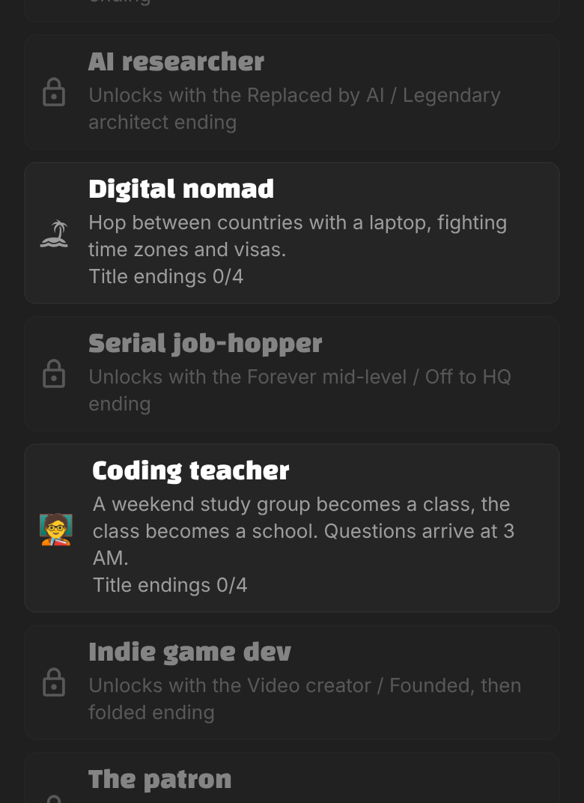
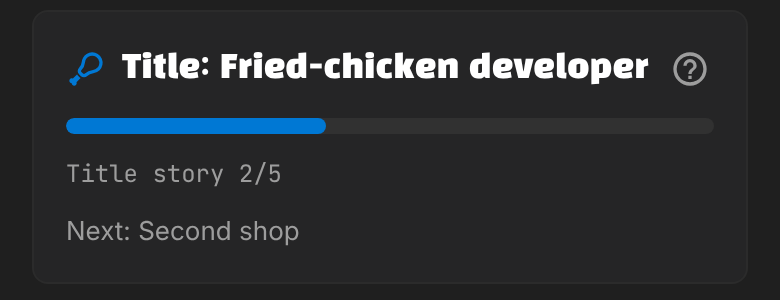
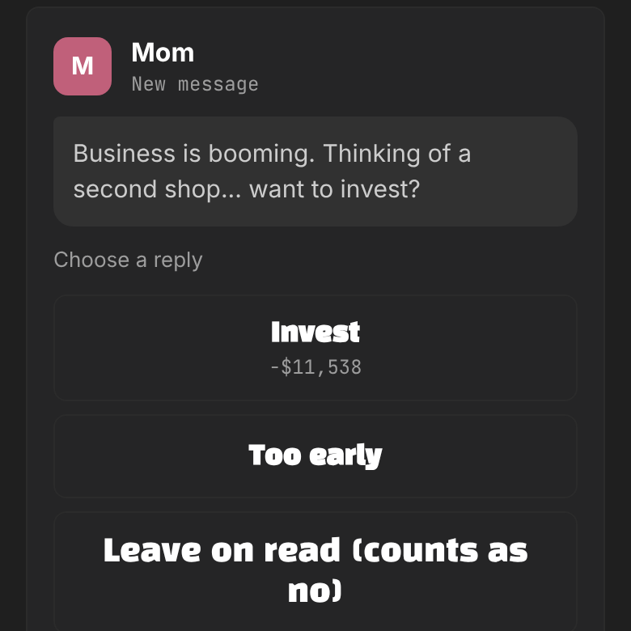
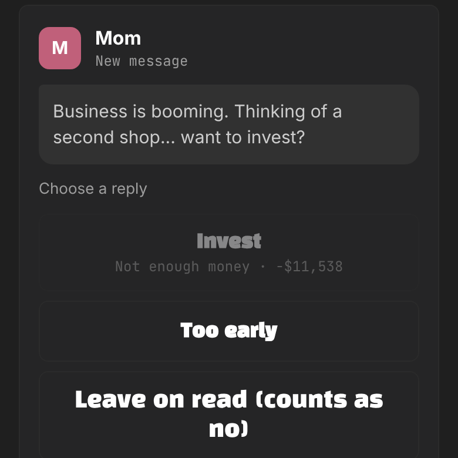
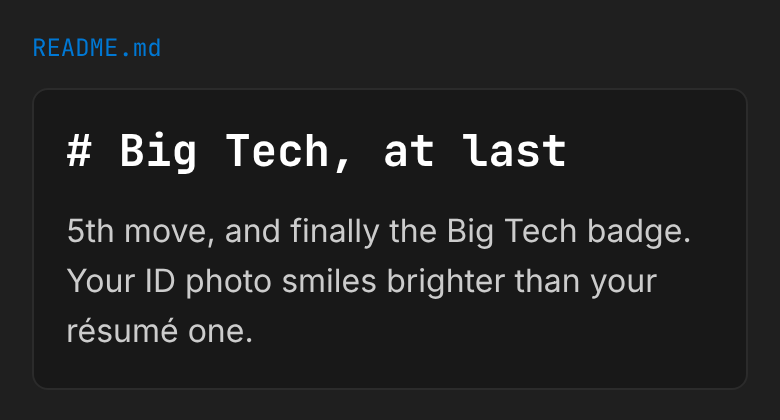

Guide › Titles
Titles
How to unlock all 11 titles, plus the exact branches, weeks and odds for all 42 title endings, and which combos go well together or block each other
- 🏷️ Titles unlock when you see endings, and before starting a career you pick 1 in the Titles section of the Home tab. Equip one and its own story comes through the messenger.
- 📬 Title stories are not random: they come in set weeks, in a set order. So if you answer as the tables on this page say, you can almost always get the ending you want.
- ⏱️ Serial job-hopper, Coding teacher, Indie game dev and Fried-chicken developer are fast titles that end in weeks 20 to 34; the rest end in weeks 52 to 64. Ending early pays 0 coins and CP, but every title ending you see for the first time gives an Epic Pack.
- 🚫 In a run with a title, the freelance offer never comes. Leave a title story message on read and that run's story is over.
How titles work 🧭#
A title is how you choose which story you go through next run. Each title has its own message story, and your answers lead to that title's own endings. They all start locked and open once you have seen one of the endings in the table below.
- Unlock a title with an endingEach title has 1 to 3 unlocking endings. It opens once any one of them is in your codex. A locked title says Unlocks with the ○○ ending.
- Equip it before the run startsIn the Titles section of the Home tab (the screen before starting a career), pick No title or 1 title. The title you pick stays equipped for the next run too.
- Get the story through the messengerDuring a run, a title card (Title: name, Title story n/5, Next: …) appears on the Home tab. Every story message whose conditions are met comes that week, once each.
- Pick an ending with your answerPick a reply that leads to an ending and the run ends right there. If you don't want the ending, pick another reply and keep going.


7 rules to know#
| Rule | What it means |
|---|---|
| 1 title per run | You equip only 1 title per run. You cannot change it partway through. |
| A set schedule | A title message comes for sure that week once the starting week + which earlier answers you gave match. It never fails to come by bad luck. |
| Must be answered | Every title message is an important message you must answer before the week can move on. |
| Left on read = story over | Tap Leave on read or pick a reply that drops the story, and that run's title story never comes again. The run itself goes on. |
| Odds are pure luck | Gear and luck do not change the odds in title story replies. They are exactly the odds on this page. |
| Replies that cost money | If your balance is short, Not enough money stops you from picking that reply (e.g. the second shop at $11.5K, quitting at $15.4K). |
| Goes on through job changes and quitting | The title story keeps coming even if you change companies, your senior quits, or the founder leaves the company. |
What do I get when a run ends with a title ending?#
| Item | A run that ended early with a title ending |
|---|---|
| Coins, CP | 0 (only runs played through all 100 weeks pay them) |
| A title ending seen for the first time | 1 Epic Pack (normal endings give a Rare Pack) |
| Codex ending reward | 1 Standard Pack. The odds endings (Big Tech, at last; License war; Bounty millionaire; Best paper award; Remote team lead; Indie smash hit) give a Rare Pack, Top dev creator an Epic Pack, and the IPO a Legendary Pack |
| Run count (finished) | It counts as finished. But the daily run quest and commit XP need 100 weeks + 10 minutes or more, so you do not get them |
| Endings marked Ending met! along the way | They don't stay. A run that ended before week 100 puts only that one title ending in the codex |
Endings that showed Ending met! during a run (e.g. a company saga's finale, Off to HQ) only stay in the codex if you finish the 100 weeks. The moment you tap a title ending reply the run ends and those endings are lost. If you have already met something, put the title ending off to the next run and decline the ending reply this time.
Each title usually has 4 title endings. Serial founder has 6, and The patron has 0 (Hannah's 2 endings count as normal endings). There are 42 title endings in all, and none are hidden.
Unlocking all 11 titles 🔓#
| Titles | Unlocking endings (you only need one) | Endings | Ends in |
|---|---|---|---|
| 🍗 Fried-chicken developer | Wing truck owner / Coder turned farmer | 4 | Weeks 20 to 30 |
| 🏝 Digital nomad | Digital nomad / Work-life balance master / Coder turned farmer | 4 | Weeks 54 to 60 |
| 👨🏫 Coding teacher | Work-life balance master / Just a developer | 4 | Weeks 24 to 32 |
| 🧳 Serial job-hopper | Forever mid-level / Off to HQ | 4 | Weeks 22 to 34 |
| 🕶 White-hat hacker | Off to HQ / Forever mid-level | 4 | Weeks 56 to 64 |
| 🎩 The patron | Just a developer / Forever mid-level / Coder turned farmer | 0 (2 Hannah endings) | Checked at week 100 |
| 🤖 AI researcher | Replaced by AI / Legendary architect | 4 | Weeks 52 to 62 |
| 📣 Dev influencer | Video creator | 4 | Weeks 54 to 64 |
| 🎮 Indie game dev | Video creator / Founded, then folded | 4 | Weeks 22 to 34 |
| 🌳 Open-source maintainer | Legendary architect / CTO at last | 4 | Weeks 52 to 62 |
| 🚀 Serial founder | Unicorn founder / Founded, then folded | 6 | Any time after quitting at week 20, up to week 100 |
Here we only look at how to open each one fastest.
Open your first title fast like this 🏃#
On a new account, one schedule choice splits the result very cleanly (S tickets every week, accept reviews).
| New account schedule | Result | Titles unlocked |
|---|---|---|
| The default schedule as is | 100% 3 burnouts → Wing truck owner (median week 35) | Fried-chicken developer |
| Team lunch, Work, Work, Work, Study, Rest | 100% 0 burnouts, 100 weeks as Tech Lead → Work-life balance master | Digital nomad, Coding teacher |
- 🍗 Fried-chicken developer opens after just 3 burnouts, so it is practically your first title. And Fried-chicken developer itself is a fast title that ends in weeks 20 to 30, so collecting its 4 endings is easy too.
- 😌 One Work-life balance master (weekly average stress 25 or less + Tech Lead or higher) opens Nomad and Coding teacher together.
- 💺 Forever mid-level (Senior Dev or lower at week 100) opens White-hat hacker, Serial job-hopper and The patron all at once. It is the only ending that opens 3.
- 👨🌾 Coder turned farmer (stamina 85 or more, stress 20 or less and under $7,692 at week 100) also opens 3: Nomad, The patron and Fried-chicken.
- 🧠 Replaced by AI (Coding under 30 at week 100) opens AI researcher. Just don't raise your coding on purpose.
Early-ending titles and quitting titles 🚪#
- Early-ending titles: Fried-chicken developer (weeks 20 to 30), Serial job-hopper (22 to 34), Indie game dev (22 to 34), Coding teacher (24 to 32). They are short on purpose, made for quick codex collecting.
- Quitting title: only Serial founder. Other title endings like go all in on courses, Take the job or Open the lab are only quitting within the story; the run ends the moment you pick them.
- Titles that go all the way: The patron has no title endings, so it always goes to week 100.



FAQ#
- I want to change my title. Can't I during a run?
- No, you go to the end with the title you equipped at the start of the run. To change it, pick one in the Titles section of the Home tab before starting the next run.
- My title messages aren't coming.
- Most likely an earlier answer did not turn on that message's condition, or the story ended with a dropping reply or leaving something on read. Check the (○○ route) marks in this page's tables. A title message always comes that week as long as its conditions are met.
- Can gear raise the odds replies?
- No. The odds in title stories are fixed, whatever your gear or luck.
- I ended with a title ending and got 0 coins.
- Only runs that finish 100 weeks pay coins and CP. Instead, every title ending you see for the first time gives an Epic Pack, and you also get the ending's reward pack from the codex.
- My title progress bar wasn't at 5/5 and I still got an ending.
- That's normal. Some milestones (Full release, Franchise inquiries, Academy offer and so on) end right away with an ending reply, so they never show on the progress bar.
- I want to go freelance with a title equipped.
- You can't. The freelance offer only comes in runs with no title, after week 24, once reputation reaches 70.
- Are there hidden title endings too?
- There are no separately hidden title endings. But endings you haven't seen yet show as ??? instead of their name in the codex. How to unlock an ending only shows in the codex if you have the shop's Secret Ending Notes.